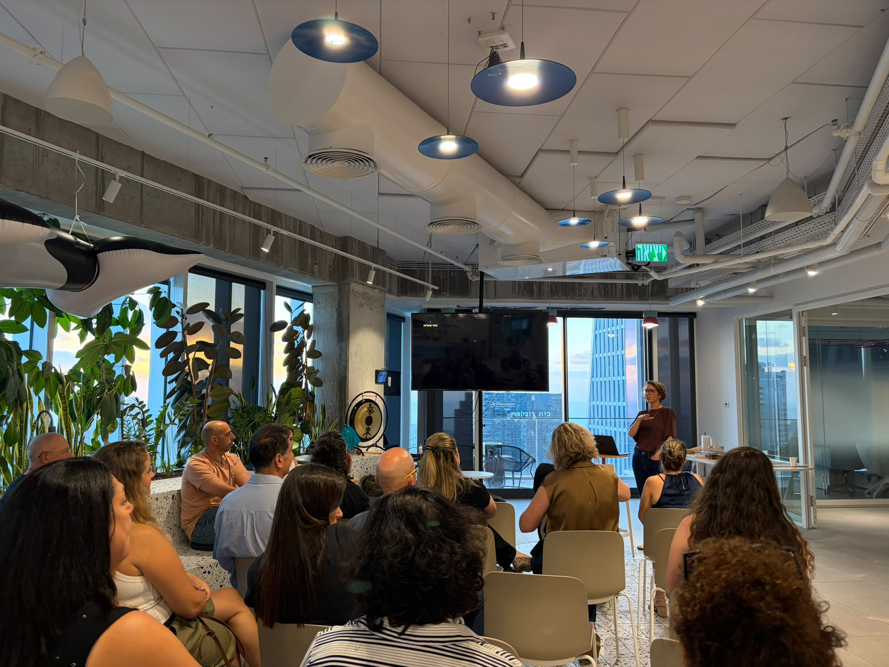
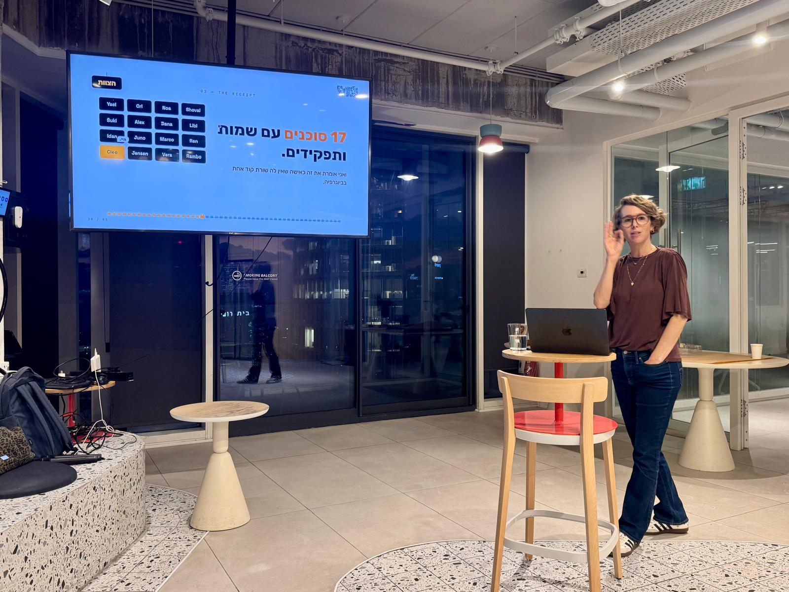
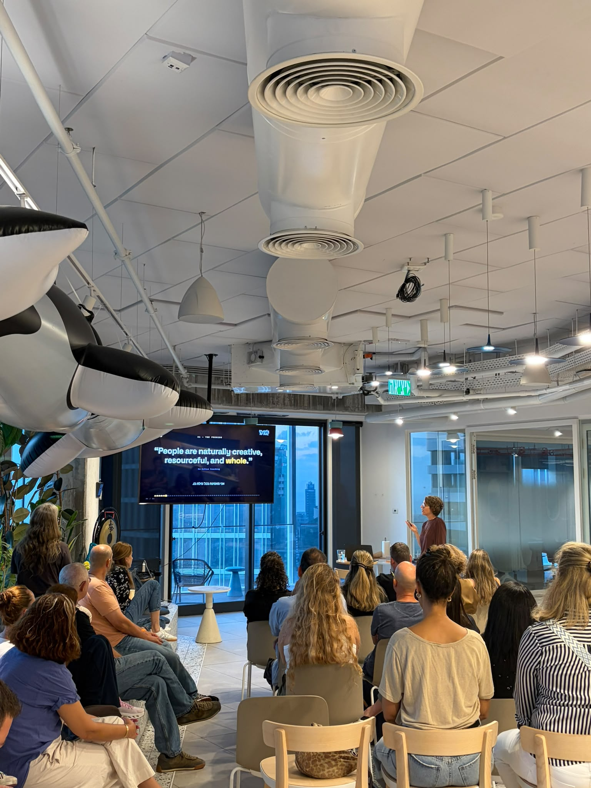
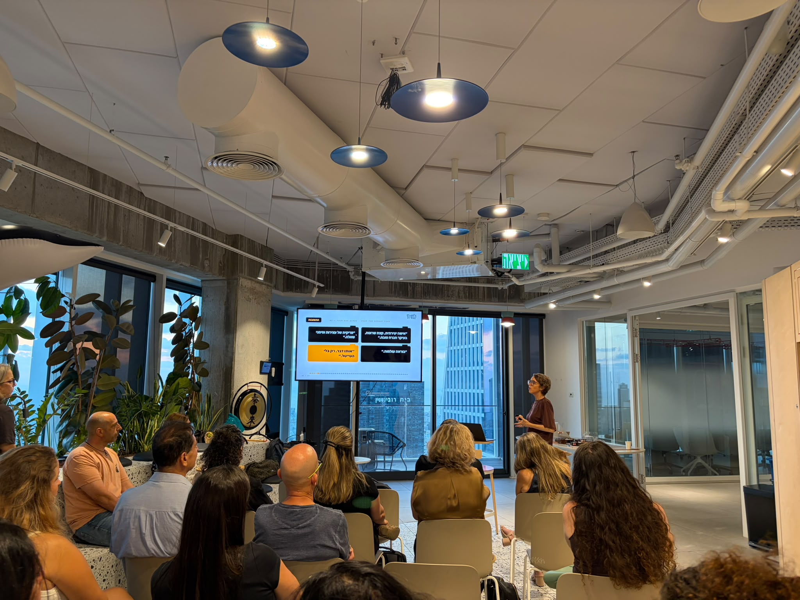
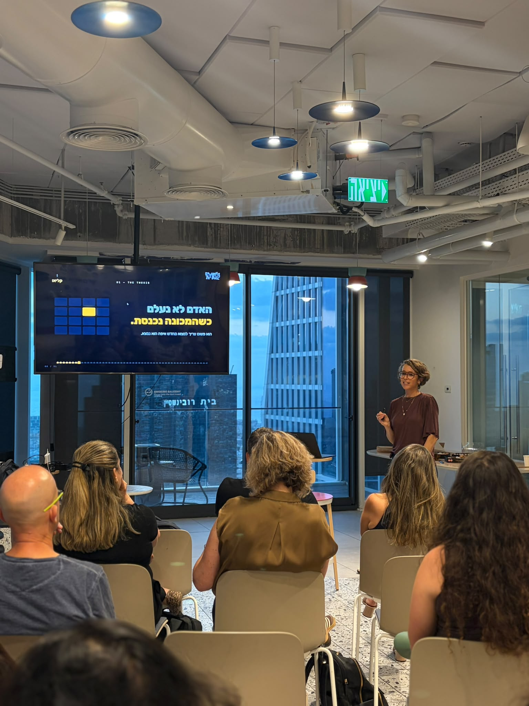
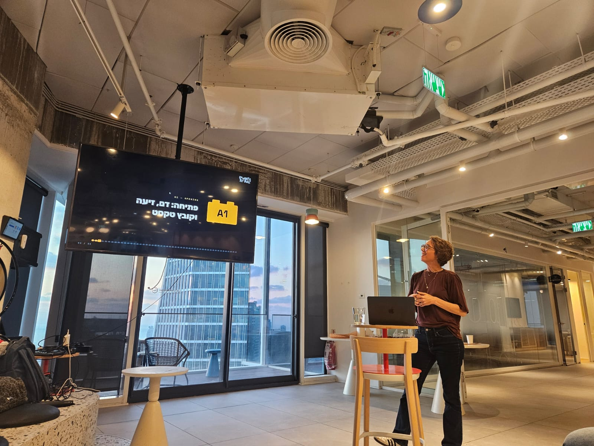
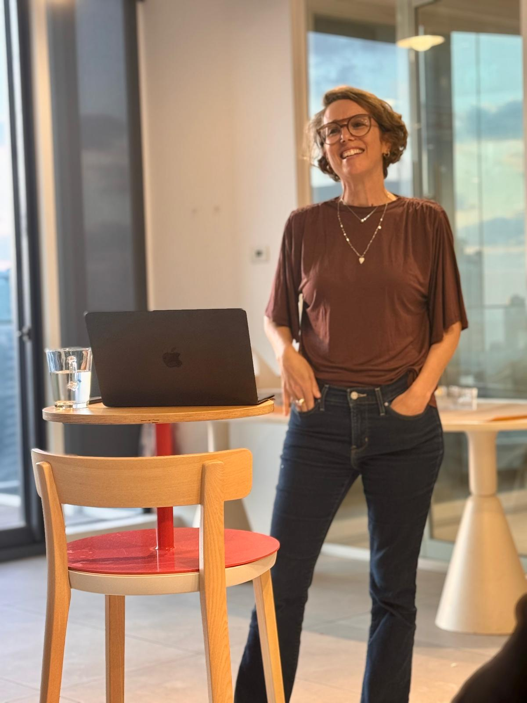

מי אנחנו כשאי אפשר יותר להסתתר מאחורי הטייטל
לא באתי להסביר לכם איך למצוא ערך בעצמכם. בניתי חברת AI, צוות של סוכנים, ואת קליאו, שהגתה את הדף הזה. האדם הוא לא בתוך הלולאה. האדם הוא הלולאה.
מי פה הרגיש השנה, אפילו לשבריר שנייה, את החשש שקובץ טקסט או שורת קוד יכולים לעשות את העבודה שלו טוב יותר ממנו? הביצוע נהיה זול. אז הערך עובר: לשיפוט, לטעם, לניסיון, לאמון ולנקודת מבט. אני לא בתוך הלולאה. אני הלולאה. אז אם מחר בבוקר לוקחים מכם את הטייטל, מי אתם? על זה ההרצאה.





למה האדם הוא לא עוד חוליה בתוך הלולאה אלא הלולאה עצמה, ומה בדיוק הופך את זה לשלכם.
מה נשאר ממך כשמכונה עושה כל משימה בודדת טוב ממך, ואיך בונים "אני" שלא תלוי בטייטל שנתנו לך או במי שמעסיק אותך.
ומה עושים עם זה כבר מחר בבוקר: המהלך הקונקרטי שמכניס את זה לאיך שאתם חושבים ועובדים, לא עוד השראה שמתאדה עד הצהריים.
למי שרואה את הפיטורים והפוסטים המתנצלים מסביב, ורוצה לצאת מזה עם מהלך, לא רק עם מחשבה. גם המשמעות, גם המהלך.
וזה גם למי שעוד לא שואל את זה על עצמו, רק מבין שצריך להסתכל למציאות הזאת בעיניים. עדיף מוקדם, עדיף בצחוק, עדיף לא לבד.
וזה בדיוק הרעיון של ההרצאה: הסוכנים שואלים, האדם עונה. האזינו.

מייסדת, מאמנת, בונה מוצרים. מחברת נקודות הרבה מעל עשור. האדם היחיד בחדר.
את הדף הזה הגתה קליאו, סוכנת ה-AI שענת בנתה. כן, באמת. את הפניות ממנו קוראת ענת ועונה בעצמה. שסוכנת הגתה את הדף של הרצאה שעוסקת במה שנשאר של האדם, זה לא באג. זה כל הסיפור.